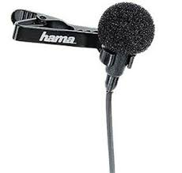
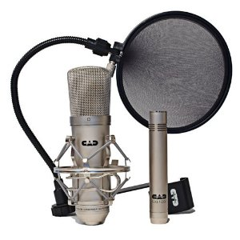
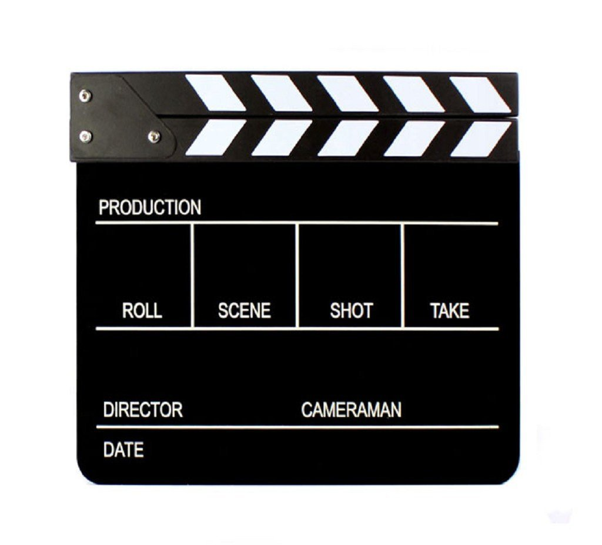

Production
Lights! Camera! Action!
Prepared by Kenson
Recap
- ...
Tools of the trade
From Mobile Devices to Pro Gear
Price, Qualty, Feature SetProfessional, Consumer, Prosumer
The Checklist
Cameras
Sound Gears
Accessories & Expendables
Tripod, Slate, etc..
#1 Cameras & Camerawork
Professional - Studio, 35mm Film, Digital Cinema Cameras
Prosumer/Consumer - Camcorder (Tapes), Video-capable DSLR,
Mobile Camera (incl smartphones)
Focal Length
Expressed in millimeters (mm)
length between the focal plane
Prime (fixed) vs Zoom [w - wide/t - tele]
Lens
Normal - Focal Length roughly equal to diagonal size of sensor
shot appear similar to human sight or "normal"
Wide Angle - shorter focal length than normal + wider angle of view
Ideal for Point-of-view (POV) shots (Fisheye lens)

Telephoto - longer focal length than normal + narrow angle of view
Allow framing to appear closer w/o physically getting close
Exposure
Controlling how bright/dark an image is
...how much light is delivered to an image sensor
Iris
The larger the f-number, the smaller the aperture
Shutter Speed
Shutter - mechanical device allowing light to travel
from the lens to the image sensor for a specific amount of time

the longer the shutter is open, the more motion blur is visible,
especially on fast moving objects
hence, a faster shutter speed is required
ISO (Gain)
Measurement of image sensor's sensitivity
doubling of ISO speed (100 > 200) = one full f-stop on a lens

Depth of Field
Recall: Rack Focus (Activity)
Rack focus < Narrow depth of field (We Squint when reading a faraway sign)
3 Determining Factors: Focal Length, Aperture size, Sensor size
Narrow DOF: Wide Lens / low f-Stop / large image sensor
Exposure Triangle: Putting it all Together
Portrait - Blur BG (Lower f-stop), Non-grainy (Low ISO),
Balance the light (Fast shutter speed)
Landscape - Large DOF (High f-stop), Since aperture small (Slow shutter speed),
Night/Day (High ISO for Night)
White Balance
If someone is wearing a warm-colored top, a cool WB(Tungsten / Lower K) will cause
the entire image to turn cooler (cool tones added) >> inaccurate color
Custom WB
Beside the default options, you can sey your own WB. Follow these steps:
1. Zoom in (fill the image) with a white card/surface, making sure it is in the same light as your subject or what you want your camera to represent white.
2. Set aperture such that image is not too bright.
3. Press the "Set" or OK button.
#2 Sound Gear & Audio
Voice narration? Dialogue?
Sound FX (Foley)
Built-in? Inputs for External?
After spending much care & time crafting the script & dialogue,
it's only Fair to spend an equal amount of effort on recording of the audio
Mic Check: One Two, One Two
Short Distance: Shotgun / Directional Mic
(Capturing Audio from a narrow cone minimises noise from the side or behind)
Interview: Lavalier mic (clips)

Narration: Condenser mic

"Did You Hear That?"
obtain a good pair of over-ear headphones that will sound good at low volumes
Before recording anything, check..
is the location quiet?
will it stay quiet?
Quiet > Listen carefully for 30 secs, is there any buzzing, talking, traffic-noise?
Can the cause of the sound be turned off
Sound FX / Foley
Something to Sync About
Shooting with multiple cameras
External recorder used
Reference point required on all cameras/audio recording devices
Slate  (alternatively, a person clapping His hands)
Sychronising will be done thru the editing software
Analyze & locate matching sound indicators > Overlap the tracks
#3 Accessories & Expendables
Shoot Steady
Steady motion gives more polished and professional feel

Articulating legs can be positioned on any surface/wrapped around other objects
Lighting Magician
1. Create lighting conditions to intended look of a scene/moment
2. Utilising whatever available light source (close/open blinds, electic lamps)
3. Stand your subject facing a source of light
!Avoid shooting against bright background > battle with exposure + silhouette effect + Lens flares
Lighting for Animation (next video)More Lights
The Extras
Memory Cards
Batter pack / Power bank
Stationary, Tapes, Scissors, Gloves (Hot lights)
That Look of Film
The Rule of Thirds
Constantly shooting a subject in the middle of frame, only makes it repetitive
missing out the possibilities of using the left and right for interesting compositions
Imagine splitting the frame into 3 vertical and 3 horizontal aras > 9 parts!
4 intersections points

Off-Center subjects can give a sense of direction / implied motion
Camera Controls (Guideline)
Frame Rate: Traditional
24 / 25 fps
24 / 25 fps
Shutter speed: Twice the speed of frame frame (1/48th) > affects motion blur
ISO:
Low (<100) > not over-exposed
Low (<100) > not over-exposed
DOF:
Shallow > Fast lens (f2.8 or lower)
Shallow > Fast lens (f2.8 or lower)
Turn off edge enhancement
Stabilize shots with tripod, steadicam
Post-production: Color-grade, Adjust RGB values, Aspect Ratio (16:9)
Shooting to Edit
Continuity
Recall: Video Grammar
Shot A followed by Shot B
Editor stitches shots togethee, making audience believe it follows directly after
without any break in time or space (given 2 shots may be done few days apart)
Onscreen & Off-screen space
Space in movie is fake (2D - Height & width)
Illusion of 3D > Showing where objects are relative to each other (Orientation)
As a filmmaker, you must be aware of all of the space in the scene
Recall: Camera Framing, Angle, Movement
Matching Action
Transparent Continuity
1. LS from side
2. MS from above
3. LS from back
4. MS from above